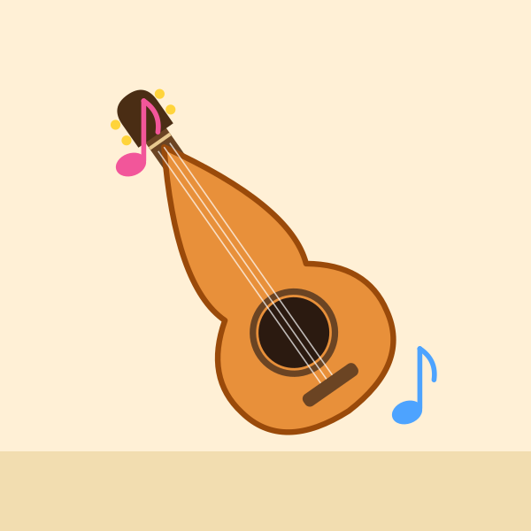
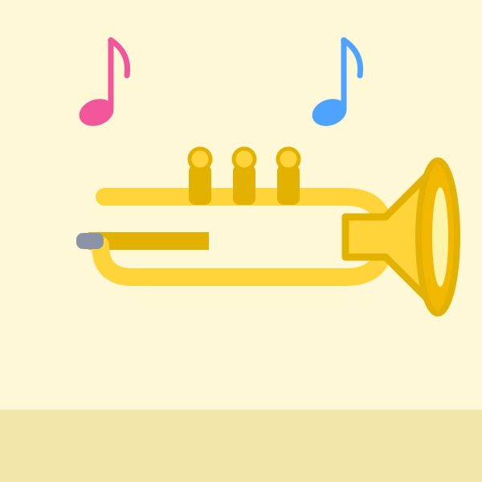
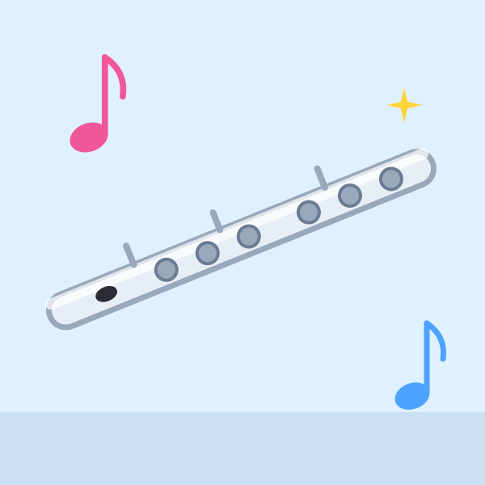
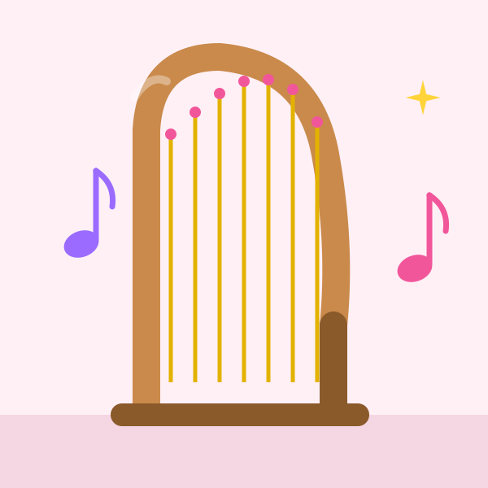
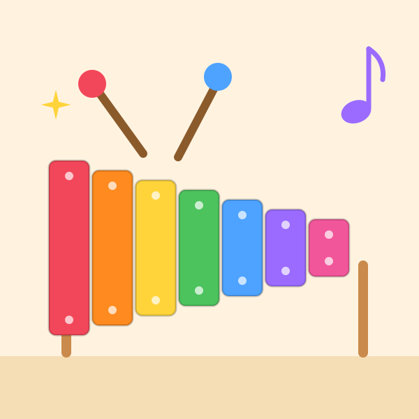
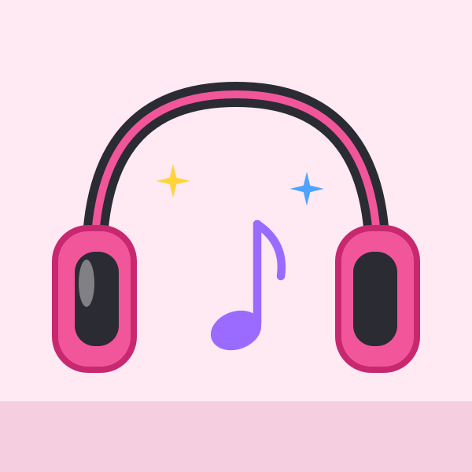

首頁 › 主題 › 音樂樂器
🎵 音樂樂器拼圖
鋼琴、吉他、小提琴、鼓、小喇叭、長笛……這個主題收錄 16 種樂器與音樂相關的圖案，讓孩子認識它們的樣子，也想想它們會發出什麼聲音。
可以選擇 9、12 或 16 片，並切換拼圖形或方塊，由簡單到困難慢慢挑戰。免費、免註冊。
這個主題裡有什麼？（共 16 張）
點選任一張圖片，就可以直接開始拼。
 鋼琴
鋼琴
吉他 小提琴
小提琴 鼓
鼓
小喇叭 薩克斯風
薩克斯風
長笛
豎琴
木琴 鈴鼓
鈴鼓 烏克麗麗
烏克麗麗 沙鈴
沙鈴 口琴
口琴 麥克風
麥克風
耳機 音符
音符
學習重點
- 認識常見樂器的名稱與外形
- 區分敲打、吹奏、彈撥的不同樂器
- 培養對節奏與音樂的興趣
和孩子一起聊聊
拼完之後，可以試著問孩子：
- 你覺得它會發出什麼聲音？可以模仿看看嗎？
- 它是用拍的、吹的還是彈的？
- 我們一起打節拍，好不好？